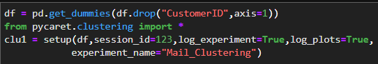

What is clustering?
We have talked about tabular datasets and Data Analysis in the last section.Sometimes after we analyze the data we may have to decide on some features.Most of this decisions are based on grouping of some sort.
Luckily there are several algorithms and techniques for these grouping operations.The technique that you are about to see is called Unsupervised Learning.
For big operations to automate we need computers right? In this day and age we don't need to classify everything on our own.
For this classifying operations Unsupervised Learning does not need any labeling before algorithm to work.It uses the relations inside the data and group them on similarities depending to the algorithm we use.
Clustering Algorithms and usage with Python
K-means Algorithm
For our data to be clustered, K-means estimates random points that we choose how many as a label.
After choosing random points as the start of different clusters, it measures the distance(by default uses euclidean distance) of each data point to randomly selected data points.So it labels closest data points to nearest randomly selected data points labels.
Until now everything is ok, let's say we've choose random data points and all other data points labeled by the distance to the randomly selected points.
But how will we know how many data points should we choose?
K-means algorithm uses total variaton change to determine the best iteration of random data points.
So that means, beacuse we choose the data points randomly first, there will probably be very biased chooses.
K-means solves this by choosing the least total variationed clustering iteration.
So again, how will we choose the number of randomly selected data points?
We have a method called Elbow Method to do this for us.
We need to try from starting 0 to where Elbow Method tells us to stop.
For each try Elbow Method shows us the reduction in variation by the number of randomly selected data points.
Let's see how to cluster with K-means in Python..
Let's take a look at our dataset.If you looked at EDA with Python section you are probably familiar with this data.
It's about a mall's customer base.
With given features and using K-means we can classify this customer to groups.
I will use pycaret library to do this.

After creating our model let's choose the number of random data points(or number of labels)
Gaussian Mixture Model Algorithm(Em Clustering)
If you have interested in clustering topic, you have probably heard that when you have visualized K-means clusters you always see "sphereic" shapes of clsuters.
That is because the algorithm K-means uses.Thay may be a problem when we have data points close to each other and it may lower the accuracy of our model.
So EM(Expectation-Maximization) or Gaussian Mixture Models are strong in there.
I use sklearn,pandas,seaborn and matplotlib libraries on EM clustering.
Now that we have fit the model we should use Principal Component Analysis(PCA) to reduce the data to 2 dimensions for visualizing.
And the last section is visualizing.As you see below is EM visualizing.You will see the slight differences between the K-means visualizing on the above section and EM visualizing.